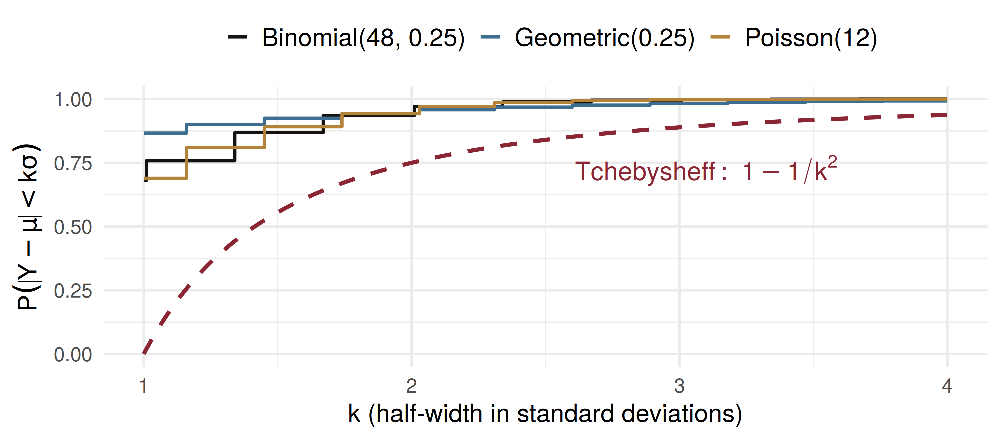

mean fact2 var
0.4200 0.2800 0.5236 sim_mean sim_var
0.4241 0.5280 Probability-Generating Functions, Tchebysheff’s Theorem, and Chapter 3 in Review
ADA University, School of Business
Information Communication Technologies Agency, Statistics Unit
2026-09-24
By the end of this lecture, you will be able to:
Write the probability-generating function \(P(t) = E(t^Y)\) of a count, and read probabilities off its coefficients
Differentiate \(P(t)\) at \(t = 1\) to obtain factorial moments, and from them \(E(Y)\) and \(V(Y)\)
Bound \(P(|Y - \mu| < k\sigma)\) with Tchebysheff’s theorem when only \(\mu\) and \(\sigma\) are known
Invert the bound to size a buffer: find \(C\) with \(P(|Y-\mu| \ge C)\) below a target
Choose among the Chapter 3 models for a count on a bank’s risk desk
Wackerly §§3.10–3.11
Wednesday ended on uniqueness: recognise the MGF \(m(t) = E(e^{tY})\), and you know the distribution. It stored the moments.
Today, two more tools, and then the chapter closes:
The risk desk’s problem
A Baku bank’s SME book has averaged 12 defaults a month, with a standard deviation of 3, over five years. Nobody on the desk is willing to say the count is binomial, Poisson, or anything else.
The regulator asks: how confident are you that next month’s defaults stay between 6 and 18?
Without a distribution there is no \(p(y)\) to add up. By the end of today there will still be an answer, and it will be a guarantee.
Definition 3.15
Let \(Y\) be an integer-valued random variable with \(P(Y = i) = p_i\), \(i = 0, 1, 2, \ldots\) The probability-generating function of \(Y\) is \[P(t) = E(t^Y) = p_0 + p_1 t + p_2 t^2 + \cdots = \sum_{i=0}^{\infty} p_i t^i\] for all \(t\) such that \(P(t)\) is finite.
The name is literal: the coefficient of \(t^i\) is \(P(Y = i)\). Expand \(P(t)\) as a series and the probability function falls out. Compare \(m(t)\), whose coefficients are moments.
Definition 3.16
The \(k\)th factorial moment of \(Y\) is \(\mu_{[k]} = E[Y(Y-1)(Y-2)\cdots(Y-k+1)]\).
Theorem 3.13
\[\left.\frac{d^k P(t)}{dt^k}\right|_{t=1} = P^{(k)}(1) = \mu_{[k]}\]
Setting \(t = 1\) removes the powers. Then \(\mu = \mu_{[1]}\) and \(V(Y) = \mu_{[2]} + \mu - \mu^2\).
An insurer’s claims per motor policy per year: \(p_0 = 0.70\), \(p_1 = 0.20\), \(p_2 = 0.08\), \(p_3 = 0.02\).
\[P(t) = 0.70 + 0.20t + 0.08t^2 + 0.02t^3\]
\(P^{(1)}(t) = 0.20 + 0.16t + 0.06t^2\), so \(\mu = P^{(1)}(1) = 0.42\) claims.
\(P^{(2)}(t) = 0.16 + 0.12t\), so \(\mu_{[2]} = P^{(2)}(1) = 0.28\).
\[V(Y) = 0.28 + 0.42 - 0.42^2 = 0.5236, \qquad \sigma = 0.724\]
mean fact2 var
0.4200 0.2800 0.5236 sim_mean sim_var
0.4241 0.5280 The PGF route and the simulation agree to about two decimal places.
Examples 3.26–3.27. A watch-listed borrower first misses a payment in month \(Y\), geometric with \(p = 0.25\). Since \(p_0 = 0\), \[P(t) = \sum_{y=1}^{\infty} t^y q^{y-1} p = \frac{pt}{1 - qt}, \qquad t < 1/q\]
Then \(P^{(1)}(t) = \dfrac{p}{(1-qt)^2}\) gives \(\mu = P^{(1)}(1) = 1/p = 4\) months, and \(P^{(2)}(1) = 2q/p^2\) gives \[V(Y) = \frac{2q}{p^2} + \frac{1}{p} - \frac{1}{p^2} = \frac{q}{p^2} = 12\]
Why keep a second tool? Because \(P(t)\) is sometimes the easier one to find. Note \(m(t) = P(e^t)\).
Theorem 3.14
Let \(Y\) be a random variable with mean \(\mu\) and finite variance \(\sigma^2\). Then, for any constant \(k > 0\), \[P(|Y - \mu| < k\sigma) \ge 1 - \frac{1}{k^2} \qquad \text{or} \qquad P(|Y - \mu| \ge k\sigma) \le \frac{1}{k^2}\]
\(\mu = 12\) and \(\sigma = 3\). The interval \((6, 18)\) is \(\mu \pm k\sigma\) with \(k = 2\): \[P(6 < Y < 18) = P(|Y - 12| < 2 \times 3) \ge 1 - \frac{1}{2^2} = \frac{3}{4}\]
At least 75%, whatever the distribution. That is the sentence the desk can sign.
If the book were steadier, \(\sigma = 2\), the same interval is \(k = 3\) and the bound rises to \(1 - 1/9 = 8/9 \approx 0.889\). As in Example 3.28, \(\sigma\) drives the guarantee.
The desk wants a level \(C\) with \(P(|Y - 12| \ge C) \le 0.04\).
Set \(1/k^2 = 0.04\), so \(k = 5\) and \(C = k\sigma = 5 \times 3 = 15\).
Provision for \(12 + 15 = 27\) defaults: the chance of 27 or more is at most 4%, with no model assumed.
The price of assuming nothing is a wide band. A model buys a tighter one, but only if the model is right. Exercise 3.167(b) asks exactly this question.
# Three models, each measured against its own mean and sd
cover <- function(y, py, k) {
mu <- sum(y * py); s <- sqrt(sum((y - mu)^2 * py))
sum(py[abs(y - mu) < k * s])
}
k <- c(1.5, 2, 3)
data.frame(
k = k,
binom_48_25 = sapply(k, \(k) cover(0:48, dbinom(0:48, 48, 0.25), k)),
poisson_12 = sapply(k, \(k) cover(0:200, dpois(0:200, 12), k)),
geom_25 = sapply(k, \(k) cover(1:500, dgeom(0:499, 0.25), k)),
tchebysheff = 1 - 1 / k^2
) |> round(4) k binom_48_25 poisson_12 geom_25 tchebysheff
1 1.5 0.8684 0.8912 0.9249 0.5556
2 2.0 0.9354 0.9422 0.9437 0.7500
3 3.0 0.9957 0.9969 0.9822 0.8889All three beat the bound; at \(k = 2\) by 18 to 19 percentage points.

Exercise 3.169, as a policy-rate decision. The central bank cuts by 1 point, holds, or raises by 1 point: \[p(-1) = \tfrac{1}{18}, \qquad p(0) = \tfrac{16}{18}, \qquad p(1) = \tfrac{1}{18}\]
\(E(Y) = 0\) and \(V(Y) = 2/18 = 1/9\), so \(\sigma = 1/3\). Take \(k = 3\), so \(k\sigma = 1\): \[P(|Y| \ge 1) = \tfrac{2}{18} = \tfrac{1}{9} = \tfrac{1}{k^2}\]
Equality. For any \(k > 1\) some distribution attains the bound, so no better model-free statement exists.
A microfinance lender opens on average 40 new arrears cases a month, with variance 25. No model is assumed.
Four minutes, in pairs:
Give a lower bound for \(P(30 < Y < 50)\).
Find \(C\) with \(P(|Y - 40| \ge C) \le 1/16\).
A colleague says “it’s 95%, by the empirical rule”. When is she entitled to say that?
\(\sigma = \sqrt{25} = 5\) and \((30, 50) = 40 \pm 2 \times 5\), so \(k = 2\): \[P(30 < Y < 50) \ge 1 - \tfrac{1}{4} = 0.75\]
\(1/k^2 = 1/16\) gives \(k = 4\), so \(C = 4 \times 5 = 20\): outside \((20, 60)\) with probability at most \(1/16\).
| Model | \(Y\) counts | \(E(Y)\) | \(V(Y)\) |
|---|---|---|---|
| Binomial | successes in \(n\) independent trials | \(np\) | \(npq\) |
| Geometric | trial of the first success | \(1/p\) | \(q/p^2\) |
| Neg. binomial | trial of the \(r\)th success | \(r/p\) | \(rq/p^2\) |
| Hypergeometric | successes in \(n\) drawn without replacement | \(nr/N\) | \(n\frac{r}{N}\frac{N-r}{N}\frac{N-n}{N-1}\) |
| Poisson | rare events per unit of time or space | \(\lambda\) | \(\lambda\) |
| No model | any count; only \(\mu, \sigma\) known | \(\mu\) | \(\sigma^2\): Tchebysheff |
25 mortgage borrowers, each defaulting independently with probability 0.03: how many default? Binomial(25, 0.03)
A recovery agent phones debtors in turn: on which call does the first promise to pay come? Geometric
An examiner pulls 8 of 60 loan files, 5 of which are misfiled: how many misfiled in the sample? Hypergeometric
Card-fraud alerts in an hour, rare and independent: Poisson
Only five years of monthly means and standard deviations: Tchebysheff
The PGF and MGF sit behind every row: they deliver each \(E(Y)\) and \(V(Y)\)
A count has \(P(t) = 0.5 + 0.3t + 0.2t^2\). What is \(E(Y)\)?
Daily FX transfers at a branch have mean 50 and standard deviation 5, shape unknown. What does Tchebysheff guarantee for \(P(40 < Y < 60)\)?
An auditor draws 10 of a bank’s 200 guarantee contracts without replacement and counts how many are undocumented. Which model fits?
| Statement | |
|---|---|
| Definition 3.15 | \(P(t) = E(t^Y) = \sum_i p_i t^i\) |
| Theorem 3.13 | \(P^{(k)}(1) = \mu_{[k]} = E[Y(Y-1)\cdots(Y-k+1)]\) |
| mean and variance | \(\mu = P^{(1)}(1)\), \(\;V(Y) = P^{(2)}(1) + \mu - \mu^2\) |
| geometric, Poisson | \(\dfrac{pt}{1-qt}\), \(\;e^{\lambda(t-1)}\) |
| Theorem 3.14 | \(P(\lvert Y-\mu \rvert < k\sigma) \ge 1 - 1/k^2\) |
| equivalently | \(P(\lvert Y-\mu \rvert \ge k\sigma) \le 1/k^2\) |
A PGF stores \(P(Y = i)\) as the coefficient of \(t^i\); its derivatives at \(t = 1\) are factorial moments
\(V(Y) = \mu_{[2]} + \mu - \mu^2\) turns them into a variance
Tchebysheff needs only \(\mu\) and \(\sigma\), and gives at least \(1 - 1/k^2\) inside \(\mu \pm k\sigma\)
The bound is conservative for familiar models but cannot be improved in general
Chapter 3 is a map: name the counting mechanism, pick the model, read off \(E(Y)\) and \(V(Y)\)
Wackerly, 7th edition
§3.10 (optional): Exercises 3.164 – 3.166, the binomial and Poisson PGFs
§3.11: Exercises 3.167 – 3.174; start with 3.167, 3.169 and 3.173
Redo the risk-desk provision with \(\sigma = 4\): what does \(C\) become?
Week 8, Problem Set 2 is open now and closes Sunday 8 November at 23:59 on WeBWorK, covering §§3.10–3.11.
Next class: 4 November, we leave counts behind for continuous random variables: distribution and density functions (Wackerly §§4.1–4.2).
Dr. Samir Orujov
📧 sorujov@ada.edu.az
🏢 Building D, Room D325
🕓 Office hours: Wednesday, 16:00 – 18:00
Slides and readings: sorujov.net/teaching
Tchebysheff says nothing for \(k \le 1\). Why is \(1 - 1/k^2\) useless there?
The Poisson PGF is \(e^{\lambda(t-1)}\). What is its second factorial moment, and hence its variance?
A model gives a tighter band than Tchebysheff. When would a risk manager still report the Tchebysheff band?

Mathematical Statistics I - PGFs, Tchebysheff and Chapter 3 Review